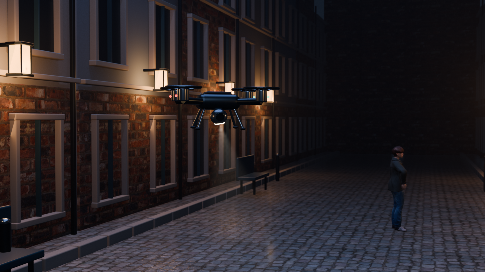

C-DROHNE / 3D-KONZEPTANIMATION
Nachtlicht.
Die Drohne bewegt sich durch eine räumliche Szene.
Kamera, Rotoren und Licht ändern sich mit ihr.

Der Film konnte nicht geladen werden. Das gerenderte Szenenbild bleibt sichtbar.
WAS SICH HIER BEWEGT
Ein räumlicher
Blickwechsel.
01 / DROHNE Gehäuse, Rotoren, Schutzringe, Landebeine und Kameragelenk sind modellierte Körper. Die Drohne ändert Position und Ausrichtung im Raum.
02 / LICHT UND KAMERA Der Scheinwerfer schwenkt mit dem Gelenk. Beleuchtung, Verdeckung und Perspektive werden aus der 3D-Szene berechnet.
03 / FIGUR UND UMGEBUNG Straße, Fassaden und eine bekleidete Figur besitzen räumliche Geometrie. Die Figur bekommt eine kleine modellierte Kopfbewegung.
Gerenderte Konzeptanimation einer erfundenen Szene. Flugbahn und Kopfbewegung sind vorgegeben. Reale Flugphysik, Sensorerkennung und selbstständige Entscheidungen werden dadurch nicht nachgewiesen. Die ausführbare Software-Arbeitsprobe prüft getrennt davon synthetische Meldungen im Browser.